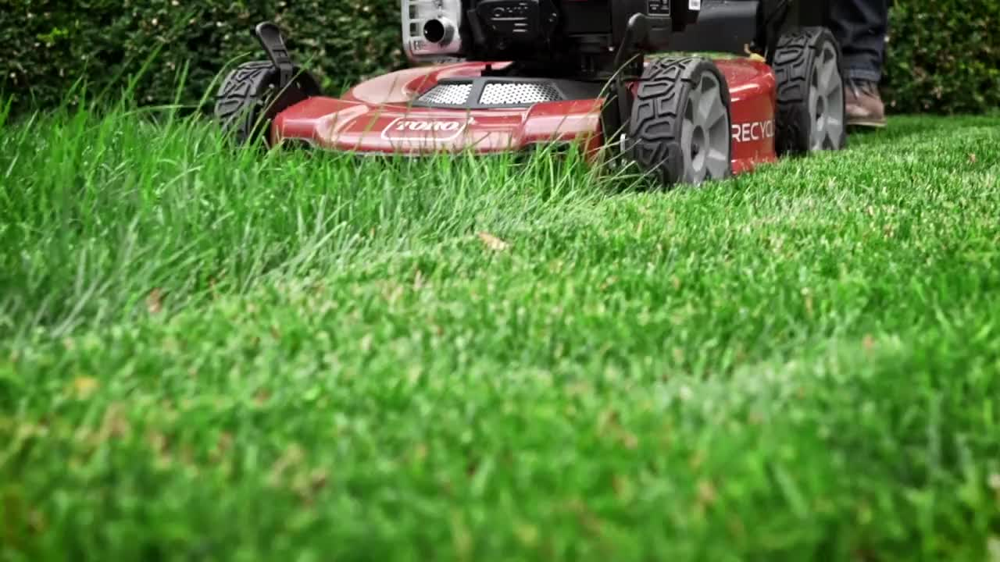

Welcome to Larry's Landscaping, your trusted partner for exceptional lawn care services in the Bensalem area. I am dedicated to providing top-notch lawn mowing services with a focus on quality and convenience.
At Larry's Landscaping, I understand the importance of a well-maintained lawn. A neatly trimmed lawn not only enhances the aesthetic appeal of your property but also creates a welcoming outdoor space for your family and guests to enjoy.
My approach is simple yet effective: I offer reliable lawn mowing services tailored to meet your specific needs. Whether you're looking for a one-time mow or regular maintenance, I've got you covered. I will deliver superior results, ensuring your lawn looks its best all year round.
Located right here in Bensalem, I take pride in serving our local community. I believe in honest work and fair pricing. That's why I offer competitive rates and accept cash payments for your convenience.
Join countless satisfied customers who trust Larry's Landscaping for their lawn care needs. Contact me today to schedule your first mow or request a free quote. Let me take care of your lawn so you can enjoy more time doing what you love.
At Larry's Landscaping, I believe in fair and transparent pricing tailored to the specifics of your lawn. My rates start as low as $50*, ensuring you receive excellent value for your money. I assess my pricing based on the square footage of your lawn and the complexity of the job. This ensures that you only pay for the services you need, without any hidden costs or surprises.
In addition to basic lawn mowing services, I offer a range of additional services to enhance the health and appearance of your lawn:
Every lawn is unique, and I understand that your needs may vary. Contact me today for a customized quote based on your specific lawn size and desired services. I're here to work with you to create a lawn care plan that fits your budget and exceeds your expectations.
Get started today by scheduling your first service or requesting a free quote. Let Larry's Landscaping take care of your lawn so you can enjoy more time outdoors.
*Prices may vary based on lawn size and specific requirements. Contact me for an accurate quote.
The Gallery
Thank you for your interest in my lawn service. For inquiries, quotes, or scheduling, please reach out to me via email at LawnServiceLarry@gmail.com.
I encourage taking the time to write out a detailed email with pictures of services if possible. Thank you!
At Larry's Landscaping, I value your time and strive to respond to all inquiries promptly. Whether you have questions about my services, pricing, or scheduling, I'm here to help. Simply drop me an email, and I will get back to you as soon as possible.